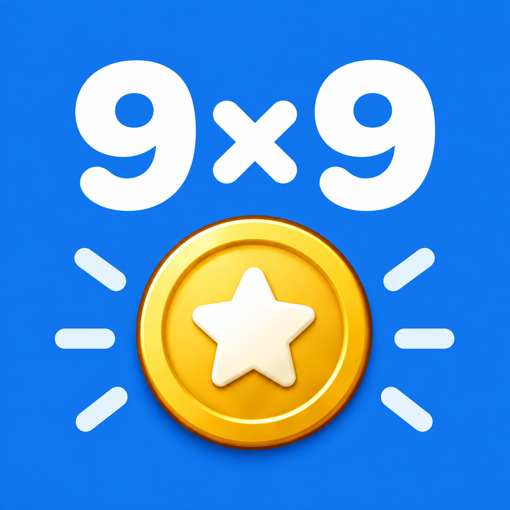

九九ドリル
九九をくり返し練習できるアプリです。すばやく正確に答えて、自分のタイムに挑戦しましょう。
公開準備中です。
3つのモードと81もん
「まえから」「うしろから」「ばらばら」、そして1×1から9×9までの「81もん」。メダルを集めると新しい段が開き、モードをクリアすると次のモードで遊べます。
メダルを集める
クリアした速さに応じて、銅・銀・金のメダルを獲得。メダルの演出と効果音で、達成を楽しくお祝いします。
自分の記録に挑戦
タイムを記録し、結果画面で最大連続正解数を確認。これまでのランキングを見ながら、繰り返し挑戦できます。記録は端末内に保存されます。
対応環境
iOS 15.0以降のiPhoneに対応。広告を表示します。